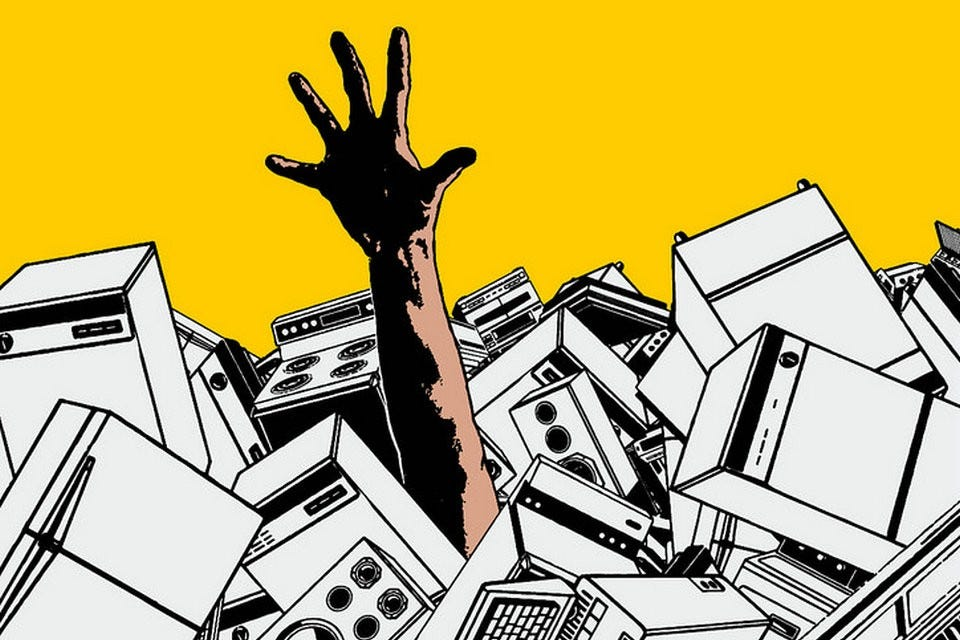
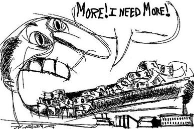

Pink tax is not limited to woman's hygiene products - it's also
found in the inflated prices of other goods as well as services
marketed to women. (Source 1)
Stats/Facts
It tends to be 7% more expensive for products marketed to woman;
increased coverage of insurance. (Source 2)
Feminine products marketed towards woman tend to be more expensive
compared to products marketed for men. (e.g. toothbrushes, razors,
feminine hygiene products, etc..)
What is Consumerism?

Drive to consume and buy goods (Source 3)
Not inherently bad in itself but rather combined with predatory
practices and overconsumption then it can become damaging to
individuals and society broadly.
What is over-consumption?
overconsumption is characterized by excessive buying and material
possessions. (e.g. collecting stanley cups, tote bags, clothes,
etc.)
Why is extreme consumerism bad?

it drives resource depletion, pollution and climate change.
The production, transport, and disposal of excess goods generate
massive amounts of waste and greenhouse gas emissions.
It fuels the exploration of low-wage workers in developing countries
to produce cheap goods. the consumption habits of the wealthy
disproportionately harm the planet's poorest communities.
it promotes a "Hedonic treadmill" where the temporary happiness from
new purchases fades quickly, leading to a cycle of chronic
dissatisfaction, financial stress, and anxiety.
Action
Knowing about it and spreading knowledge about the topic
Personal change in habits
Try to push for legislation to try and ameliorate the issue.